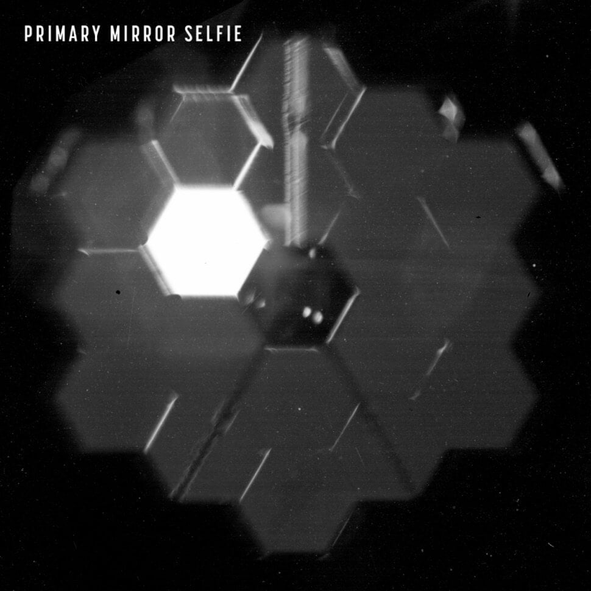

ဒီ အဖြစ်အပျက်ဟာ ပြီးခဲ့တဲ့ မေလ တုန်းက ဖြစ်ပျက်ခဲ့တာ ဖြစ်တယ်လို့ နာဆာရဲ့ သတင်း ထုတ်ပြန်ချက်မှာ ဖေါ်ပြ ထားပါတယ်။ ဒါပေမယ့် အခု ဖြစ်ရပ်ဟာ တယ်လီစကုပ် ကြီးရဲ့ လုပ်ငန်း ဆောင်ရွက်နိင်စွမ်း ကိုတော့ ထိခိုက်မှု ရှိမှာ မဟုတ်ဘူးလို့ နာဆာရဲ့ ထုတ်ပြန်ချက်မှာ ဖော်ပြ ထားပါတယ်။

“ဝက်ဘ် ရဲ့ သက်တမ်း အစပိုင်း စွမ်းဆောင် ချက်တွေဟာ မျှော်လင့်တာထက် သာလွန် နေပါသေးတယ်။ မှန်ပြောင်းကြီးဟာ သူ့ကို ဒီဇိုင်း ပြုလုပ်ထားတဲ့ သိပ္ပံ သုတေသန တွေကို အပြည့်အဝ စွမ်းဆောင်နိုင်မှာ ဖြစ်ပါတယ်” လို့ ကြေငြာချက်မှာ ဆက်လက် ဖော်ပြ ထားပါတယ်။
အခု ဂျိမ်းဝက်ဘ် တယ်လီ စကုပ်ကြီးရဲ့ အလင်းပြန် ကြေးမုံ မှန်ဘီလူး တစ်ခုကို လာတိုက်မိတဲ့ ဥက္ကာခဲ လေးဟာ micrometeroid လို့ ခေါ်တဲ့ ဥက္ကာခဲ့ အသေးလေး ဖြစ်ပါတယ်။ ဒီ မိုက်ကရို ဥက္ကာခဲ အသေးလေး တွေဟာ သဲမှုန် တစ်မှုန် ထက်တောင် အရွယ်အစား သေးငယ်ပါတယ်။
ဒီ မိုက်ကရို ဥက္ကာခဲ လေးဟာ ပြီးခဲ့တဲ့ မေလ ၂၃ ရက်နေ့နဲ့ ၂၅ ရက်အကြား လာရောက် ထိမှန် ခဲ့တာ ဖြစ်တယ်လို့ ဆိုပါတယ်။

နာဆာရဲ့ သတင်း ထုတ်ပြန်ချက် အရ မိုက်ကရို ဥက္ကာခဲ လေးတွေ လာတိုက်မိတဲ့ ဖြစ်စဉ်ဟာ လေဟာနယ် ထဲမှာ ရှိတဲ့ တယ်လီစကုပ် တစ်စင်း အတွက်တော့ ဘယ်လိုမှ ရှောင်လွှဲလို့ မရတဲ့ ဖြစ်စဉ် လို့ ဆိုပါတယ်။ ဒါပေမယ့် ဒီလို အဖြစ်မျိုး ဖြစ်လာနိုင်တယ် ဆိုတာကို ကြိုတင် တွက်ဆပြီး တယ်လီစကုပ် ကြီးကို ပုံစံထုတ် တည်ဆောက် ထားတယ်လို့ ဆိုပါတယ်။
ဒီလို မိုက်ကရို ဥက္ကာခဲ အတိုက် ခံရတာ ဒါဟာ ပထမဆုံး အကြိမ်တော့ မဟုတ်ပါဘူး။ ဂျိမ်းစ်ဝက်ဘ် ကို စတင် လွှတ်တင် စကတဲက အခုအထိ ဒီလို အတိုက် ခံရတာ စုစုပေါင်း ၄ ကြိမ် ရှိပြီလို့ သိရပါတယ်။ ဒါပေမယ် ဒီ ဖြစ်ရပ်တွေက ဂျိမ်းစ်ဝက်ဘ်ရဲ့ စွမ်းဆောင်ရည် ကိုတော့ ထိခိုက်မှု ရှိမှာ မဟုတ်ဘူးလို့ ဆိုပါတယ်။
Ref: James Webb telescope hit by micrometeoroid: NASA